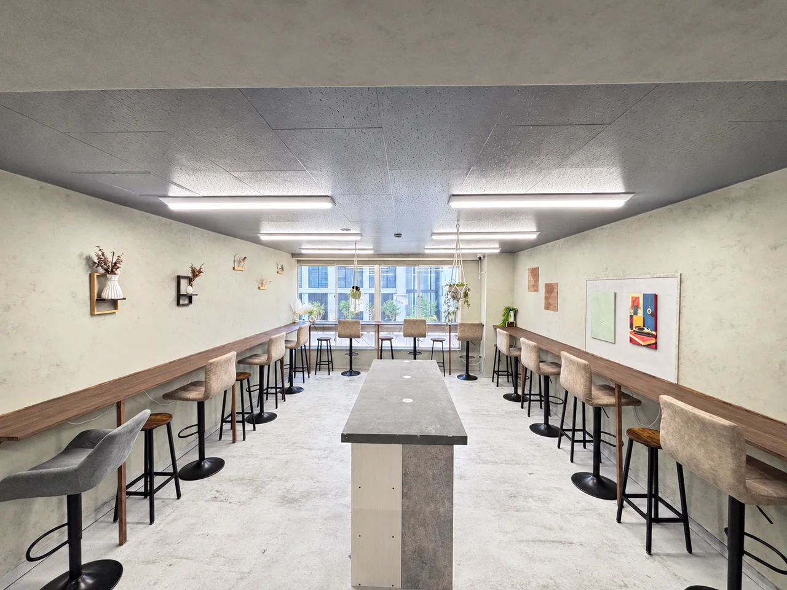
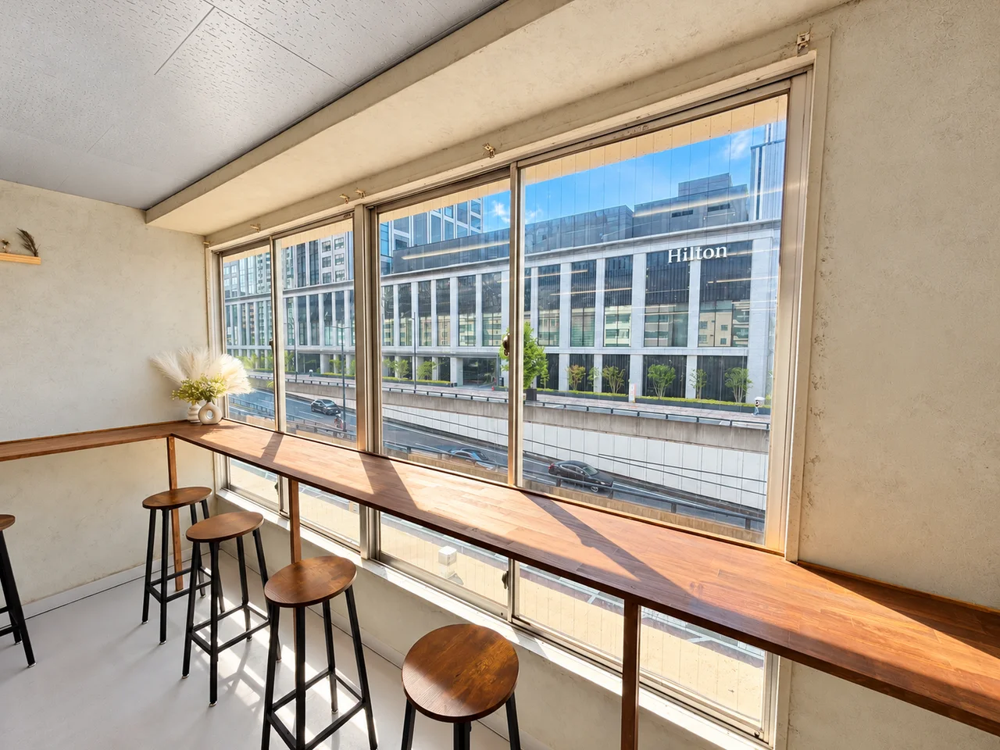
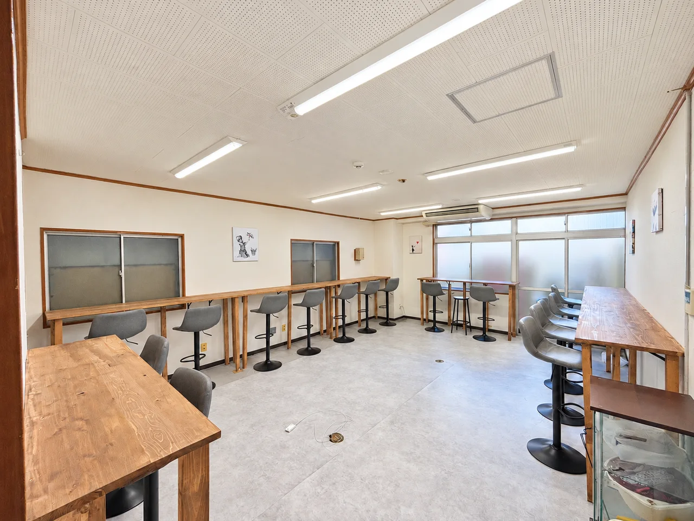
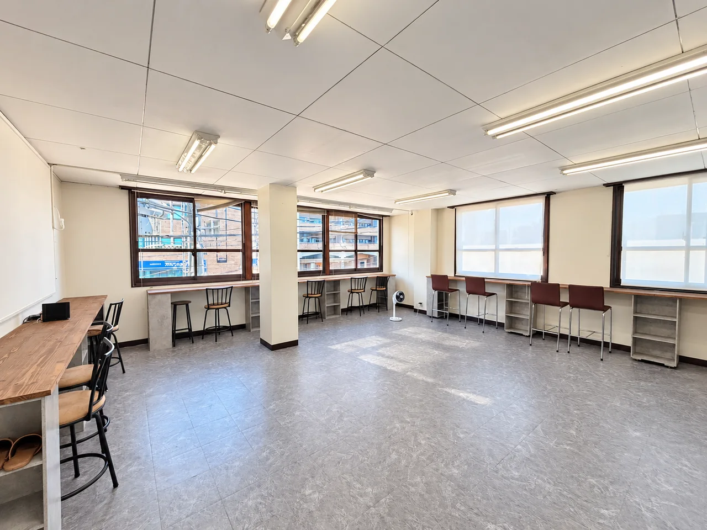
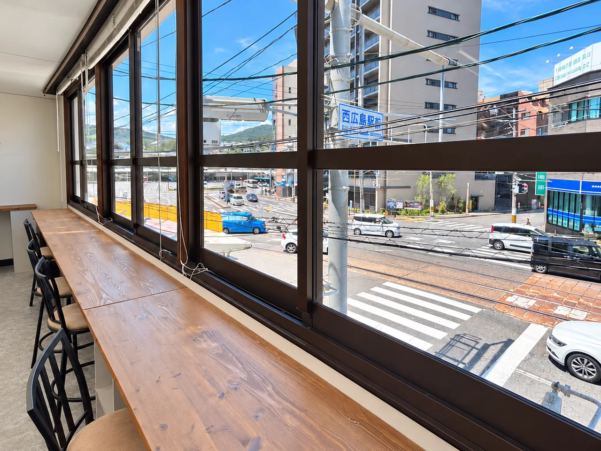

01校舎紹介
勉強する場所を、日常の中に。
宝町校・西広島校。通いやすい場所で、毎日の学習を。

集中して自習する。分からないことを質問する。勉強の進め方を相談する。毎日の学習を支える、2つの校舎です。難関の医学部受験を突破した広島大学医学部医学科の講師が、学習マネジメントや個別指導ではマンツーマンでサポートします。
02通いやすい、2つの校舎
宝町校・西広島校。
学校帰りにも、休日にも。通いやすい校舎をお選びください。
両校共通の利用時間
- 開校時間
- 7:00〜22:00
- 質問対応時間
- 平日18:00〜22:00
質問は、平日18:00〜22:00の質問対応時間に受け付けています。
※LIGHTは週3日まで。STANDARD・MANAGEMENTは毎日利用できます。
03校舎へのアクセス
TAKARAMACHI
宝町校
フジグランから徒歩1分。
- 所在地
- 〒730-0044広島県広島市中区宝町4-29 第一小林ビル202
- 公共交通機関
- バス停「宝町北」より徒歩1分（フジグラン広島近く）
- 広電「比治山橋」電停より徒歩約8分
- 開校時間
- 7:00〜22:00
- 質問対応時間
- 平日18:00〜22:00


04校舎へのアクセス
NISHIHIROSHIMA
西広島校
西広島駅から徒歩2分。

- 所在地
- 広島市西区己斐本町1丁目17-1 井崎ビル2階
- 開校時間
- 7:00〜22:00
- 質問対応時間
- 平日18:00〜22:00

05無料体験・学習相談
まずは、校舎の雰囲気を
体験してください。
実際に学習空間で勉強してみる。講師に質問してみる。今の勉強について相談してみる。ご希望の校舎で、Medistudyを体験してください。
入塾を決めていなくても大丈夫です。
無料体験・学習相談を申し込む公式LINEで相談する無料体験・学習相談は、申込フォームからご予約ください。事前のご質問は、公式LINEでも受け付けています。
料金・コースを見る